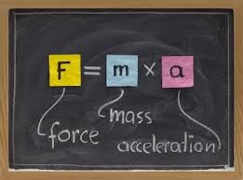
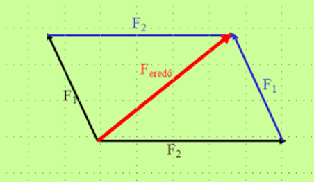

Newton 1. törvénye
Tehetetlenség törvénye: Minden inerciarendszerben vizsgált test nyugalomban marad vagy egyenes vonalú egyenletes mozgást végez mindaddig, míg ezt az állapotot egy másik test vagy erő hatása meg nem változtatja egy kölcsönhatás során. Inerciarendszer: Olyan vonatkoztatási rendszer, amelyben igaz Newton I. törvénye Tömeg fogalma: Tehetetlenség mértéke Annak a testnek nagyobb a tehetetlensége, amelynek nehezebb megváltoztatni a sebességét Skarlármennyiség Jele: m [m] = kg

Newton 2. törvénye
Egy pontszerű testnek a gyorsulása azonos irányú a testre ható F erővel, nagysága egyenesen arányos az erő nagyságával, és fordítottan arányos a test m tömegével. F = m * a Dinamika alapegyenlete [F] = N (kg/s2) 1 N az erő, ha 1 kg tömegű testen 1 m/s2 gyorsulást okoz Az erő a támadáspontban lép fel és a hatásvonala mentén hat
Newton 3. törvénye
Hatás - ellenhatás törvény: Két test kölcsönhatása során mindkét testre azonos nagyságú, azonos hatásvonalú és egymással ellentétes irányú erő hat. Az erő és az ellenereje nem ugyanarra a testre hatnak

Newton 4. törvénye
Szuperpozíció elve: Ha egy testre egy időpillanatban több erő hat, akkor ezek együttes hatása megegyezik a vektori eredőjük hatásának vonalával.
Lendületmegmaradás törvénye
Lendület: test tömegének és sebességének szorzata Vektormennyiség Lendületmegmaradás törvénye: Zárt rendszerben (nincs kölcsönhatás a testek és a környezet között) a kölcsönhatás előtti lendület vektorösszege egyenlő a kölcsönhatás utáni lendület vektori összegével A kölcsönhatásban résztvevő testek sebességének változásának nagysága fordítottan arányos a tömegükkel.

Ütközések
Rugalmas ütközés: Ütközés után visszanyerik eredeti alakjukat (nincs maradandó alakváltozás) Lendületmegmaradás törvénye érvényes Energiamegmaradás Rugalmatlan ütközés: Ütközés után maradandó alakváltozás Együtt mozognak tovább közös sebeséggel Lendületmegmaradás törvénye érvényes Energia egy része "szétszóródik" - deformáció, hő formájában